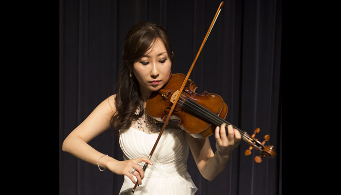

About
Ms. Judy Yoo is the current Associate Concertmaster in the Burbank Philharmonic Orchestra.She has recently performed at the Pre-Grammys Concert in Hollywood, 2016. She is the most sought-after violinist, personally asked by many politicians, including the former President Bill Clinton, George Bush, former Governor Arnold Schwarzenegger, Mayor Sukhee Kang, and Steven Choi. She is also the president of the New England Conservatory alumni association of the west coast Chapter. She is a concert Violinist at Disney and recording artist for Universal Music. She is a pupil of the late Eric Rosenblith, prized student of Carl Flesch, holds her Bachelor's and Master's degrees from the New England Conservatory in Boston, MA. Born in Seoul Korea, Yoo began her music studies at the age of two and half in piano and at age three began her violin studies and made her first symphony debut at the age of twelve. She has performed throughout North and South America and Asia as a soloist and chamber musician. She served as the former Concertmaster of the Metrowest Symphony Orchestra Massachusetts.
Her solo performances led her to the Mt. San Antonio College Performing Arts Center, Paulist Center in Boston, Seoul Somang Church, Denmark Arts Center in Fryeburg, Maine, San Francisco National War Auditorium, and Meadows Amphitheater.She has worked with renowned musicians such as Donald Weilerstein, Charles Dutoit, Benjamin Zander, Werner Hink, among others. Yoo received the Boston Microtonal Society, Jonathan Keith Scholarship Award in 2003, merit scholarship from the New England Conservatory, Orange County Arts Society, Violin Performance First Prize Award and was the First Place Winner for the Many Cultures, One World, Appreciation Award. She was awarded the Merit of Honorable Musicianship, and Certificate of Recognition from the Southern California School Band and Orchestra Association.
As a recording artist, she plays in numerous film and television sessions. Since 1995, Ms. Yoo has been teaching privately and since then, she has taught at the New England Conservatory for college level as a violin, solfege teaching assistant, and keyboard, music theory instructor. She was the violin and viola instructor at the North End Music Performing Center, Revere High School, Beacon Hill School and Ipswich High School. She also served as a Judge in Jury for the Parkway Orchestra Young Musician Competition held in Boston University and for the preliminaries at The 38th Los Angeles Korea Times Music Competition and the Orange County Korean Cultural Center, 4th Music Contest.